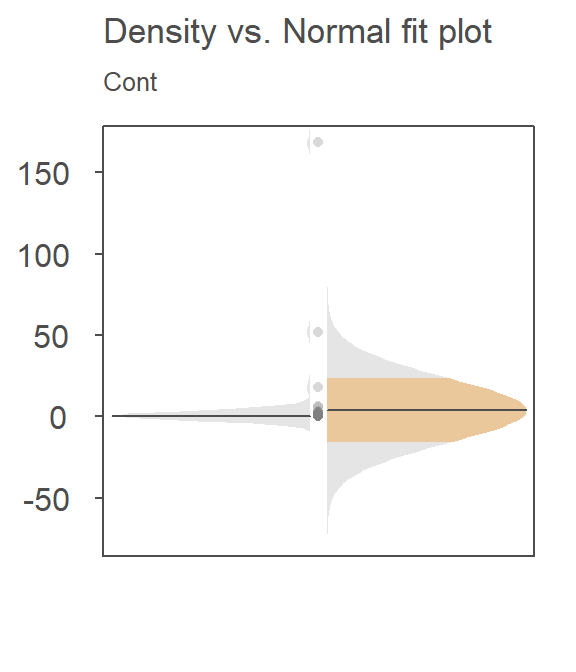
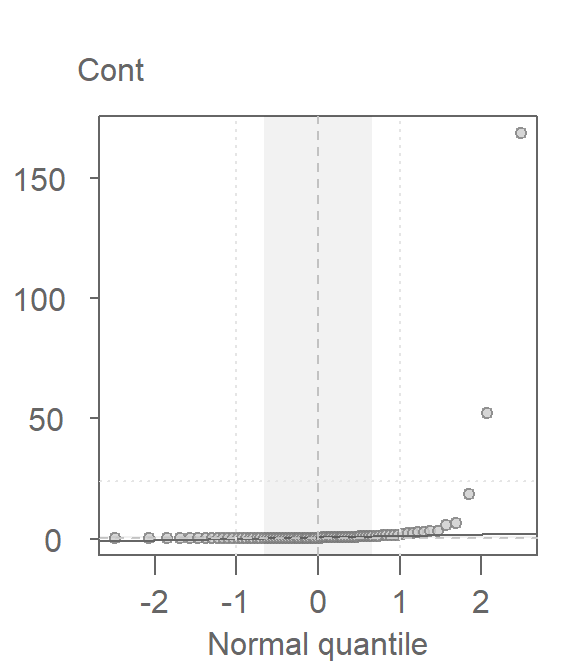
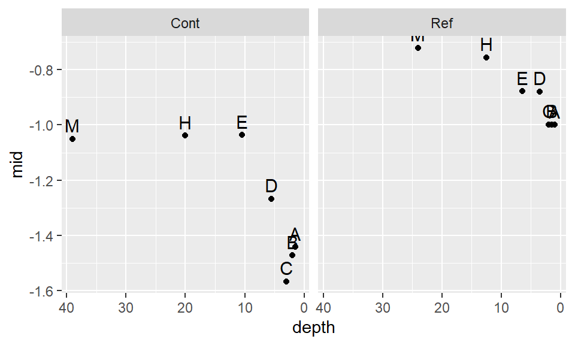
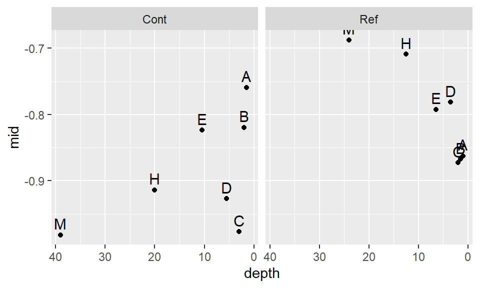

| dplyr | ggplot2 |
|---|---|
| 1.1.4 | 3.4.4 |
23 Fine-tuning re-expression and Robust statistics
23.1 Introduction
The data represent 1,2,3,4-tetrachlorobenzen (TCB) concentrations (in ppb) for two site locations: a reference site free of external contaminants and a cleaned contaminated site (Millard et al., p. 416-417).
# Create the two data objects (TCB concentrations for reference and contaminated sites)
Ref <- c(0.22,0.23,0.26,0.27,0.28,0.28,0.29,0.33,0.34,0.35,0.38,0.39,
0.39,0.42,0.42,0.43,0.45,0.46,0.48,0.5,0.5,0.51,0.52,0.54,
0.56,0.56,0.57,0.57,0.6,0.62,0.63,0.67,0.69,0.72,0.74,0.76,
0.79,0.81,0.82,0.84,0.89,1.11,1.13,1.14,1.14,1.2,1.33)
Cont <- c(0.09,0.09,0.09,0.12,0.12,0.14,0.16,0.17,0.17,0.17,0.18,0.19,
0.2,0.2,0.21,0.21,0.22,0.22,0.22,0.23,0.24,0.25,0.25,0.25,
0.25,0.26,0.28,0.28,0.29,0.31,0.33,0.33,0.33,0.34,0.37,0.38,
0.39,0.4,0.43,0.43,0.47,0.48,0.48,0.49,0.51,0.51,0.54,0.6,
0.61,0.62,0.75,0.82,0.85,0.92,0.94,1.05,1.1,1.1,1.19,1.22,
1.33,1.39,1.39,1.52,1.53,1.73,2.35,2.46,2.59,2.61,3.06,3.29,
5.56,6.61,18.4,51.97,168.64)
# We'll create a long-form version of the data for use with some of the functions
# in this exercise
df <- data.frame( Site = c(rep("Cont",length(Cont) ), rep("Ref",length(Ref) ) ),
TCB = c(Cont, Ref ) )Our goal is to assess if, overall, the concentrations of TCB at the contaminated site are greater than those at the reference.
23.2 A typical statistical approach: the two sample t-Test
We are interested in answering the question: “Did the cleanup at the contaminated site reduce the concentration of TCB down to background (reference) levels?”. If the question being addressed is part of a decision making process such as “Should we continue with the remediation?” we might want to assess if the difference in TCBs between both sites is “significant” enough to conclude that the TCBs are higher than would be expected if chance alone was the process at play.
A popular statistical procedure used to help address this question is the two sample t-Test. The test is used to assess whether or not the mean concentration between both batches of values are significantly different from one another. The test can be framed in one of three ways: We can see if the batches are similar, if one batch is greater than the other batch, or if one batch is smaller than the other batch. In our case, we will assess if the Cont batch is greater than the Ref batch (this is the alternative hypothesis). We’ll make use of the t.test function and set the parameter alt to "greater" (indicating that we are assessing if the Cont mean is significantly greater than that of Ref).
t.test(Cont, Ref, alt="greater")
Welch Two Sample t-test
data: Cont and Ref
t = 1.4538, df = 76.05, p-value = 0.07506
alternative hypothesis: true difference in means is greater than 0
95 percent confidence interval:
-0.4821023 Inf
sample estimates:
mean of x mean of y
3.9151948 0.5985106 The test suggests that there is just a small chance (7.5%) that the two batches of concentrations are the same. The test outputs the means of each batch: 3.9 ppb for the contaminated site and 0.6 ppb for the reference site.
Many ancillary data analysts may stop here and proceed with the decision making process. This is not good practice. To see why, let’s deconstruct the t-test.
First, we need to find out how the test is representing the batches of numbers. The t-test characterizes the location of the batch using the mean, and the spread using the standard deviation. Nothing more. In essence, the test is reducing the complexity of the batches down to two pairs of numbers.
The t-test uses these pairs of numbers to reconstruct, then compare the distributions. Here are the distributions the t-test thinks it’s comparing:

The red line is the distribution of TCB values for the contaminated site (standard deviation = 20.02) and the black line is the concentration of TCB values for the reference site (standard deviation = 0.28). The red vertical line is the mean concentration of the contaminated site which falls well outside the range of concentrations observed at the reference site.
As an aside, it’s worth mentioning that the variances are clearly unequal thus violating a basic requirement for the t-test however, R invokes the Welch’s t-test by default to mitigate for unequal variance and sample size. But, Welch’s test does require that the distributions follow a normal theoretical distribution (i.e. they can be different in size but must be normal in shape).
The spread for the contaminated site is several orders of magnitude greater than that of the reference site. But are these reconstructed distributions really representative of the data?
Let’s plot the density distributions for both batches:
OP <- par(mfrow = c(1,2), mar=c(3,3,2,2))
plot(density(Ref))
plot(density(Cont))
par(OP)
These are clearly different looking distributions from those assumed by the t-test which should put the t-test results into question.
The t-test is clearly not properly representing the distribution of the two batches. The contaminated site, Cont, has several extreme values that is severely skewing the distribution. We can create a normal q-q plot to see how many values are skewing the distribution.
qqnorm(Cont, pch=20, col=rgb(0,0,0,0.4))
qqline(Cont,lty=3)It looks like at least four values (which represent ~5% of the data) are contributing to the strong skew and to a much distorted representation of location and spread. The mean and standard deviation are not robust to extreme values. In essence, all it takes is one single outlier to heavily distort the representation of location and spread in our data. We say that the mean and standard deviation have a breakdown point of 1/n where n is the sample size.
The median and interquartile range are less sensitive to extreme values. In fact, the median has a breakdown point of n/2. In other words, half of the values would have to be modified to alter the median.
The boxplot makes use of these robust measures of location and spread; let’s compare the batches with and without the extreme (outlier) values.
OP <- par(mfrow=c(1,2), mar=c(3,2,1,1))
# Boxplot with outliers
boxplot(TCB ~ Site, df, main="With outliers")
# Boxplot without outliers
boxplot(TCB ~ Site, df, main="Without outliers", outline=FALSE)
par(OP)
Note that because of the robust nature of the median and interquartile range, the boxplot helps us to spot the outliers. In fact, the boxplot has a breakdown point of n/4 (i.e. 25% of the values must be extreme before we see any masking of extreme values). The standard deviation, on the other hand, can be inflated by one extreme value thus masking the potentially problematic values.
One observation that can also be gleaned from this plot is the skewed nature of the Cont data within the interquartile range (IQR). This suggests that even if we were to remove the outliers, the data would violate the normal distribution requirements.
23.3 Re-expression
If we are to use the t-test, we need to make sure that the distributional requirements are met. Even Welch’s modification has one requirement about the distribution: both spreads must follow a normal distribution. Let’s compare the batches to a theoretical normal distribution via a theoretical q-q plot:
OP <- par(mfrow=c(1,2), mar=c(2,2,1,1))
qqnorm(Ref, pch=20, col=rgb(0,0,0,0.3))
qqline(Ref)
qqnorm(Cont, pch=20, col=rgb(0,0,0,0.3))
qqline(Cont)
par(OP)
These batches do not follow the straight line suggesting skewness in the distribution (as was noted with the boxplots). A workaround to this problem is to re-express the batches of values in such a way to render them as close to normal as possible. However, in doing so, we must make sure that both batches are re-expressed in an equal way to facilitate comparison. A popular re-expression used with observational data that exhibit skewness towards higher values is the log transformation:
OP <- par(mfrow=c(1,2), mar=c(2,2,1,1))
qqnorm(log(Ref), pch=20, col=rgb(0,0,0,0.3))
qqline(log(Ref))
qqnorm(log(Cont), pch=20, col=rgb(0,0,0,0.3))
qqline(log(Cont))
par(OP)
Log-transforming the concentrations seems to have done a good job in creating normally distributed numbers. Let’s re-run the t-Test on the log-transformed values.
t.test(log(Cont), log(Ref), alt="greater")
Welch Two Sample t-test
data: log(Cont) and log(Ref)
t = 0.42589, df = 101.99, p-value = 0.3355
alternative hypothesis: true difference in means is greater than 0
95 percent confidence interval:
-0.2090447 Inf
sample estimates:
mean of x mean of y
-0.5474262 -0.6195712 Note that the result differs significantly from that with the raw data. This last run gives us a p-value of 0.34 (suggesting little difference in overall concentrations) whereas the first run gave us a p-value of 0.075 (suggesting that the contaminated site may have had, overall, greater concentration values).
At this point, it’s important to remind ourselves what we are comparing after having log-transformed the data; we are no longer comparing means but the log of means instead. More specifically, via mathematical construct, it can be shown that a log-transformation of the data results in testing the hypothesis that the ratio of mean concentrations are equal to 1.
23.4 Fine-tuning the re-expression
The log transformation is one of many re-expressions that can be applied to the data. Let’s explore the skewness across different “depths” of the Cont values to see if the skewness is systematic. We’ll use letter value summary plots to help guide us to a reasonable re-expression.
First, we’ll look at the raw contaminated site data:
source("https://raw.githubusercontent.com/mgimond/ES218/gh-pages/es218.R") # Needed to run the lsum() function
library(ggplot2)
# Generate letter value summary table
Cont.lsum <- lsum(Cont, l=7)
# Plot the letter values
ggplot(Cont.lsum) + aes(x=depth, y=mid, label=letter) +geom_point() +
scale_x_reverse() +geom_text(vjust=-.5, size=4)
The data become strongly skewed for 1/32th of the data (depth letter C). Let’s now look at the reference site.
Ref.lsum <- lsum(Ref, l=7)
ggplot(Ref.lsum) + aes(x=depth, y=mid, label=letter) +geom_point() +
scale_x_reverse() +geom_text(vjust=-.5, size=4)
A skew is also prominent here but a bit more consistent across the depths with a slight drop between depths D and C (16th and 32nd extreme values).
Next, we will find a power function that re-expresses the values to satisfy the t-test distribution shape requirement. We’ll first look at the log transformation implemented in the last section. Note that we are using the custom Box-cox function bc from the ES218.R source script to transform the data (recall that the log transformation is one of a large family of Box-Cox transformations).
library(dplyr)
df %>%
group_by(Site) %>%
do(lsum( bc(.$TCB,0), l=7) ) %>%
ggplot() + aes(x=depth, y=mid, label=letter) + geom_point() +
scale_x_reverse() +geom_text(vjust=-.5, size=4) + facet_grid(.~Site)
The log transformation seems to work well with the reference site, but it’s not aggressive enough for the contaminated site. Recall that to ensure symmetry across all levels of the batches, the letter values must follow a straight (horizontal) line. Let’s try a power of -1/2:
df %>%
group_by(Site) %>%
do(lsum( bc(.$TCB,-0.5), l=7) ) %>%
ggplot() + aes(x=depth, y=mid, label=letter) + geom_point() +
scale_x_reverse() +geom_text(vjust=-.5, size=4) + facet_grid(.~Site)
This seems to be too aggressive. We are facing a situation where attempting to normalize one batch distorts the other batch. Let’s try a compromise and use -.35.
df %>%
group_by(Site) %>%
do(lsum( bc(.$TCB,-0.35), l=7) ) %>%
ggplot() + aes(x=depth, y=mid, label=letter) + geom_point() +
scale_x_reverse() +geom_text(vjust=-.5, size=4) + facet_grid(.~Site)
This seems to be a bit better. It’s obvious that we will not find a power transformation that will satisfy both batches, so we will need to make a judgement call and work with a power of -.35 for now.
Let’s compare the re-expressed batches with a normal distribution.
OP <- par(mfrow=c(1,2), mar=c(2,2,1,1))
qqnorm(bc(Ref,-0.35), pch=20, col=rgb(0,0,0,0.3), main="Reference")
qqline(bc(Ref,-0.35))
qqnorm(bc(Cont,-0.35), pch=20, col=rgb(0,0,0,0.3), main="Contaminated")
qqline(bc(Cont,-0.35))
par(OP)
The distributions do not look too bad when viewed in a q-q plot. Note how the letter values summary plot can pick up on subtle skewness that may not be apparent in a q-q plot. But is the observed skewed distribution after applying a power transformation really significant? I.e. is it small enough not to bias our t-test results?
Let’s run the t-test.
t.test(bc(Cont,-0.35), bc(Ref,-0.35), alt="greater")
Welch Two Sample t-test
data: bc(Cont, -0.35) and bc(Ref, -0.35)
t = -1.0495, df = 111.68, p-value = 0.8519
alternative hypothesis: true difference in means is greater than 0
95 percent confidence interval:
-0.4845764 Inf
sample estimates:
mean of x mean of y
-0.9264188 -0.7386209 Note that the result differs significantly from that with the raw data. This last run gives us a p-value of 0.85 whereas the first run gave us a p-value of 0.075 and the log-transformed run gave us a p-value of 0.34. If you tweak the power transformation ever so slightly, you will note that the p-value can change measurably, but fortunately not enough to alter the conclusion that there is no significant difference in concentrations between both sites when comparing the batches using the mean raised to the -0.35th power.
23.5 Robust tests
It should be clear by now that many of the popular statistical procedures that reduce the data to a mean and standard deviation are not robust to datasets that don’t fit these models well. In fact, most observational data seldom follow a nice normal distribution. The above exercise demonstrates how a very simple implementation of a t-Test can result in a lengthy detour through exploration and re-expression. This can be time consuming when exploring many different datasests. Fortunately there are several alternative statistics that are far less restrictive than the t-Test but serve the same purpose: comparing batches of numbers. These are covered here very superficially for reference.
23.5.1 Permutation test
The idea here is that if concentrations of TCB come from an identical site, then it should not matter which batch (Ref or Cont) a concentration comes from. By mixing up (permuting) the values across batches, we can come up with a distribution of mean (or median) concentration differences between batches we would expect to get if there was no difference, then compare our observed mean (or median) differences to that of the distribution of simulated mean (or median) differences. In the following example, we will we choose the median over the mean because of its robust measure of location.
# Pool the concentrations
Pool <- c(Ref, Cont)
# Create an empty vector that will store the simulated median differences
med.dif <- vector()
# Run simulations
for (i in 1:999){
# Permute the pooled data then assign the resampled data to each batch
Pool.rnd <- sample(Pool, replace=FALSE)
# Grab the first batch of values
Cont.rnd <- Pool.rnd[1:length(Cont)]
# Grab the second batch of values
Ref.rnd <- Pool.rnd[ (length(Cont)+1):length(Pool)]
# Compute median differences
med.dif[i] <- median(Cont.rnd) - median(Ref.rnd)
}
# Plot the distribution of median differences
hist(med.dif)
# Now let's see where our observed difference in median concentration lies
abline(v = median(Cont) - median(Ref), col="red", lw=2)
We can compute a pseudo p-value from the above. Note that we are interested in the number of simulated values that are different than our observed value (i.e. we’re not concerned with the direction of our value), we are therefore conducting a two-side test whose p-value can be computed as:
N.greater <- sum( (median(Cont) - median(Ref)) >= med.dif) # Number of simulated differences
# greater than the observed value
n <- length(med.dif) #number of simulated values
p <- 2 * min(N.greater + 1, n + 1 - N.greater) / (n +1)
p[1] 0.178Here, the p-value gives us the probability that our observed difference in median concentration value is consistent with the expected difference if the two sites were identical. In our example, that probability is around 0.18 suggesting that overall, the concentrations at both sites are relatively the same.
23.5.2 Wilcoxon rank sum test
This is another popular alternative to the t-Test. The technical implementation and interpretation is identical to that of the t-Test. It differs from the t-Test in that it is based on the observation ranks as opposed to the observation means. Here, we implement a two-sided test addressing the question “are the differences in concentrations between the sites significant”.
wilcox.test(Cont, Ref, alternative = "two.sided")
Wilcoxon rank sum test with continuity correction
data: Cont and Ref
W = 1582, p-value = 0.2423
alternative hypothesis: true location shift is not equal to 0The p-value (which is similar to that found via the permutation technique) suggests that the difference in overall concentrations is not that great between both sites… despite the presence of a few outliers!
23.6 Don’t forget the outliers!
But let’s not loose site of our question which is “Did the cleanup at the contaminated site reduce the concentration of TCB down to background (reference) levels?” It’s obvious once we look at the data that for a few sites, more remediation is needed–particularly for the sites with the three highest concentrations of 6.61, 18.4 and 168.64 ppb and possibly the sites whose concentrations are 5.56 and 6.61. No statistical procedure is needed to come to this conclusion!
23.7 References
Millard S.P, Neerchal N.K., Environmental Statistics with S-Plus, 2001.